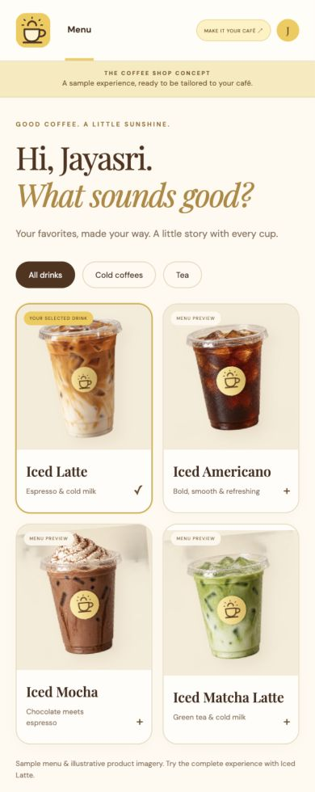
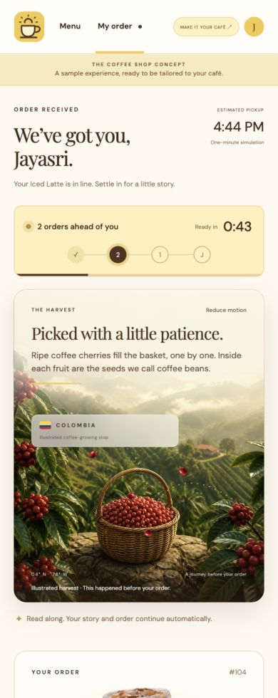
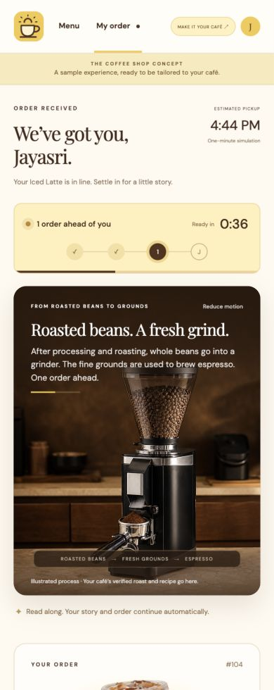
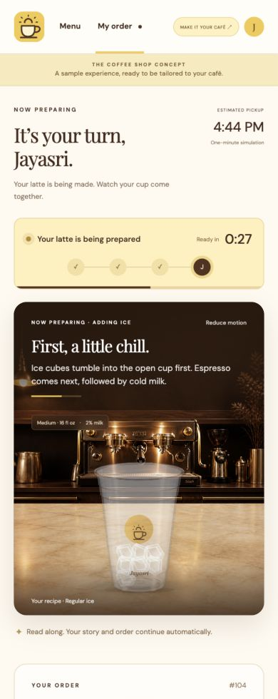
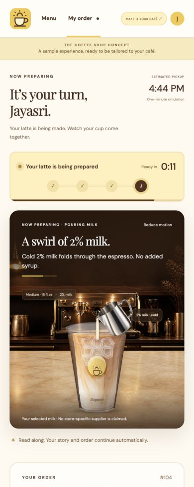
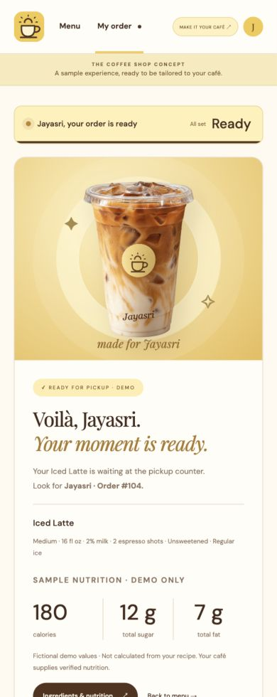

A LITTLE STORY WITH EVERY CUP
Make the wait
worth it.
Waiting for coffee can feel like empty time. I built a concept that gives that moment a purpose: a quiet story about ingredients, an order moving through the queue, and a cup made for you.
Concept only. No real orders or payments. Nutrition numbers are fictional design samples.
ONE ORDER. NO NEXT BUTTONS.
From “we’ve got you”
to “it’s ready.”
Three orders ahead. Then two. Then one. Follow the harvest, see the grinder, and watch ice, espresso, and milk come together. The pickup screen appears automatically.
I built the experience with HTML, CSS, JavaScript modules, SVG compositing, and generated artwork, using Codex as my coding collaborator.
A café could adapt it to its own branding and share verified sourcing and ingredient information. The goal is connection; the story still needs real facts behind it.
Download the animated GIF (2× speed) ↗{kind=link}
THE EXPERIENCE, FRAME BY FRAME
A closer look.
{kind=link}

{kind=link}

{kind=link}

{kind=link}

{kind=link}

{kind=link}

Actual screenshots and a silent screen recording of the prototype. Product and farm imagery inside the app is generated concept artwork, not café footage. Tap a screenshot to download it.